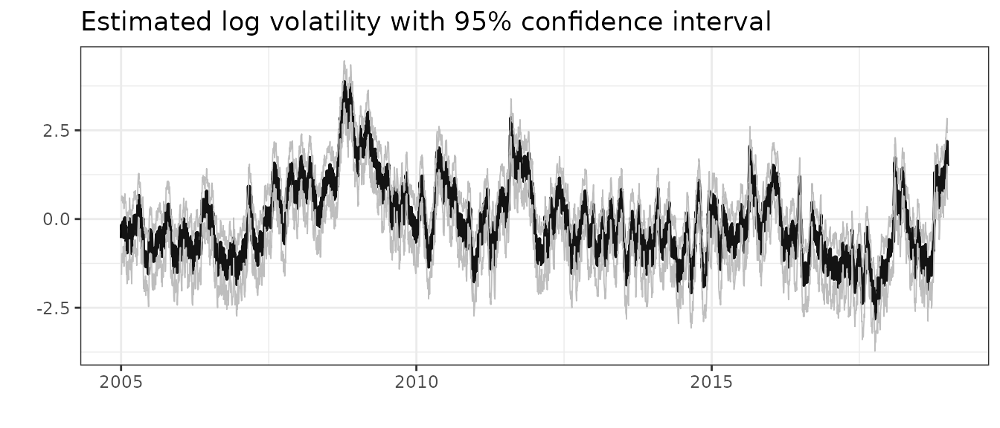
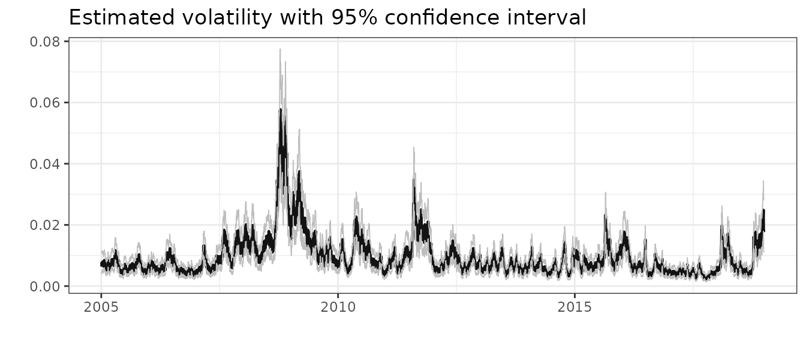
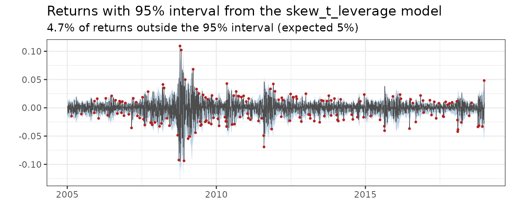
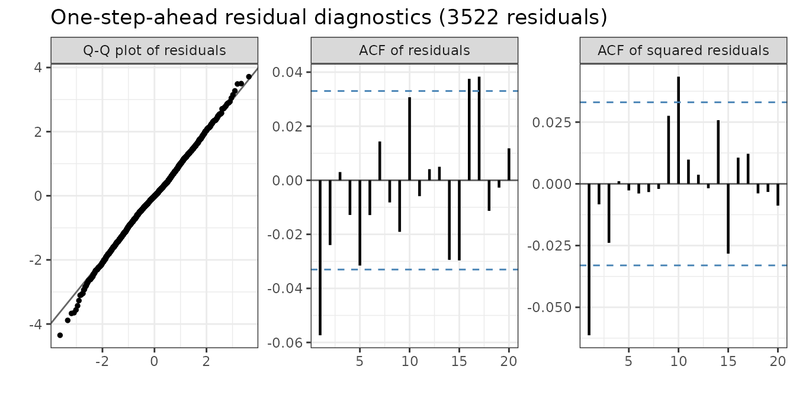
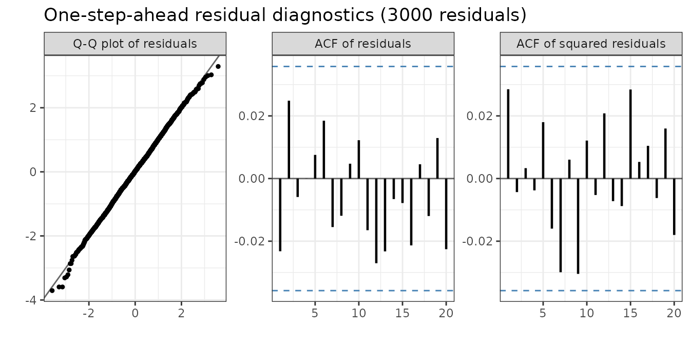

stochvolTMB: Likelihood estimation of stochastic volatility
Jens Christian Wahl
Source:vignettes/stochvolTMB_vignette.Rmd
stochvolTMB_vignette.RmdThe stochastic volatility model
The stochastic volatility model, introduced by Taylor (1982), is defined by \[\begin{equation} \begin{aligned} y_t &= \sigma_y e^{h_t/2} \epsilon_t, \quad t = 1, \dots, T, \\ h_{t+1} &= \phi h_{t} + \sigma_h \eta_t, \quad t = 1, \dots, T-1, \\ \eta_t &\stackrel{\text{iid}}{\sim} \mathcal{N}(0,1), \\ \epsilon_t &\stackrel{\text{iid}} {\sim} F \end{aligned} \end{equation}\] where \(y_t\) is the observed log returns, \(h_t\) is the logarithm of the variance on day \(t\). The distribution of the innovations \(\epsilon_t\) is specified below. To ensure stationarity for \(h_t\), we assume \(|\phi| < 1\). It can be shown that the unconditional distribution of \(h_t\) is \(\mathcal{N}(0,\sigma_h^2/(1 - \phi^2))\), and we assume \(h_1 \sim \mathcal{N}(0,\sigma_h^2/(1-\phi^2))\). An interpretation of the latent process \(\{h_t\}\) is that is represents the random and uneven flow of new information into the marked. For different time points, the variance will be dependent of this unobserved ``flow’’ of information, i.e. conditioning on \(h_t\), \(\mathrm{Var}(y_t | h_t) = \sigma_y^2 e^{h_t}\).
The original SV model from Taylor
(1982) assumed normally distributed innovations, but this is
usually to strong of an assumption. Financial returns are usually
heavy-tailed, might be asymmetric and the volatility can be correlated
with the returns. The latter is called the leverage effect,
where there is a negative correlation between a change in price and the
volatility, meaning that a drop in price tend to lead to an increase in
volatility To take these features of financial time series into account
stochvolTMB has implemented the following seven models for
the innovations:
- Gaussian: \(\epsilon_t \sim \mathcal{N}(0,1)\)
- t: \(\epsilon_t \sim t_\nu(0,1)\), where \(\nu\) is the degrees of freedom.
- Skew-Gaussian: \(\epsilon_t \sim \mathcal{SN}(0,1, \alpha)\), with zero mean, unit variance and shape parameter \(\alpha\). See Skewness and the shape parameter for how the asymmetry is estimated and reported.
- Leverage: \(\epsilon_t \sim \mathcal{N}(0,1)\) and \(\mathrm{Cor}(\epsilon_t, \eta_t) = \rho\)
- Skew-Gaussian with leverage: \(\epsilon_t \sim \mathcal{SN}(0,1, \alpha)\) and \(\eta_t = \rho \epsilon_t + \sqrt{1 - \rho^2} e_t\), where \(e_t \sim \mathcal{N}(0,1)\) is independent of \(\epsilon_t\). Then \(\mathrm{Cor}(\epsilon_t, \eta_t) = \rho\), and the returns have the same skewness as in the skew-Gaussian model. With \(\alpha = 0\) this is the leverage model.
- Skew-t: \(\epsilon_t\) has the skew t distribution of Jones and Faddy (2003), scaled to zero mean and unit variance. Its density is proportional to \((1 + x/\sqrt{a + b + x^2})^{a + 1/2} (1 - x/\sqrt{a + b + x^2})^{b + 1/2}\) before scaling. The left tail decays like a t-distribution with \(\nu_L = 2a\) degrees of freedom, and the right tail like one with \(\nu_R = 2b\). With \(\nu_L < \nu_R\), large losses are more likely than large gains, which is common for stock returns. With \(\nu_L = \nu_R\) this is the t model.
- Skew-t with leverage: \(\epsilon_t\) has the skew t distribution above, and \(\eta_t = \rho \epsilon_t + \sqrt{1 - \rho^2} e_t\) as in the skew-Gaussian model with leverage. This combines heavy and asymmetric tails with the leverage effect.
Skewness and the shape parameter
The skew-Gaussian models report two numbers for the asymmetry of
\(\epsilon_t\): the shape parameter
alpha and the skewness. Both describe the same
distribution on different scales.
The shape parameter \(\alpha\) is the parameter of the skew-normal density. With location \(\xi\) and scale \(\omega\) chosen so that \(\epsilon_t\) has mean zero and unit variance, the density is \[ p(x) = \frac{2}{\omega} \phi\left(\frac{x - \xi}{\omega}\right) \Phi\left(\alpha \frac{x - \xi}{\omega}\right), \] where \(\phi\) and \(\Phi\) are the density and the distribution function of the standard Gaussian distribution. \(\alpha = 0\) gives the Gaussian distribution, and \(\alpha \to \pm \infty\) gives a half-Gaussian distribution. \(\alpha\) has no direct statistical meaning.
The skewness \(\gamma_1 = \mathrm{E}[\epsilon_t^3]\) is the usual skewness coefficient, because \(\epsilon_t\) has mean zero and unit variance. It is a monotone function of \(\alpha\): \[ \delta = \frac{\alpha}{\sqrt{1 + \alpha^2}}, \qquad \mu = \delta \sqrt{2 / \pi}, \qquad \gamma_1 = \frac{4 - \pi}{2} \frac{\mu^3}{(1 - \mu^2)^{3/2}}. \]
| \(\alpha\) | 0 | 0.5 | 1 | 2 | 5 | 27 | \(\infty\) |
|---|---|---|---|---|---|---|---|
| \(\gamma_1\) | 0 | 0.02 | 0.14 | 0.45 | 0.85 | 0.99 | 0.995 |
stochvolTMB estimates the skewness, not \(\alpha\), for two reasons:
- Close to zero, \(\gamma_1\) grows like \(\alpha^3\). The likelihood is therefore flat in \(\alpha\) at \(\alpha = 0\) (the first and second derivatives are zero), and an optimizer that starts there does not move. In the skewness, the likelihood has a normal slope at zero.
- Large values of \(\alpha\) change the distribution very little. The skewness is bounded by \(|\gamma_1| < 0.99\), which corresponds to \(|\alpha| \le 27\). This keeps the optimizer away from the half-Gaussian limit, where the fit is unstable.
The skewness is estimated on a transformed scale as
logit_skewness.
summary(object, report = "transformed") reports
skewness and alpha with standard errors from
the delta method. Use skewness for inference. Use
alpha when you need the shape parameter, for example in
sim_sv, sn::dsn or other software. When the
skewness is close to zero, a small change in skewness gives a large
change in \(\alpha\), so the standard
error of alpha is very large even when the skewness is well
determined.
In the skew-Gaussian model with leverage, the skewness is that of the return shock \(\epsilon_t\), not of the returns \(y_t\). The time-varying volatility, and its correlation with past shocks, change the distribution of \(y_t\).
stochvolTMB is inspired by the package stochvol (Kastner (2016)), but stochvolTMB
obtain parameter estimates through maximum likelihood estimation and not
Markov Chain Monte Carlo.
Usage
The main functions of stochvolTMB are:
| Function Name | Description |
|---|---|
estimate_parameters |
Estimate parameters of a stochastic volatility model. |
sim_sv |
Simulate data from a stochastic volatility model. |
plot.stochvolTMB |
Plot estimated volatility and predicted (with confidence intervals). |
summary.stochvolTMB |
Extract parameter estimates and volatility with uncertainty. |
predict.stochvolTMB |
Predict future volatility and returns. |
plot_returns |
Plot returns with intervals from the fitted model. |
residuals |
Calculate one-step-ahead residuals. |
plot_diagnostics |
Plot diagnostics based on one-step-ahead residuals. |
estimate_parameters returns an object of class
stochvolTMB. The summary function returns a
data.table with estimated parameters, estimated
log-volatility and transformed parameters along with standard errors,
p-values and z-values. The argument report = "fixed"
returns the parameters on the scale they were estimated. This means that
the standard deviations \(\sigma_y,
\sigma_h\) are given on the log scale; the degrees of freedom is
one the scale \(\log (\nu - 2)\) to
ensure that \(\nu > 2\) (i.e. the
variance exists); and lastly that the persistence parameter \(\phi\) and the correlation parameter \(\rho\) are estimated on a logit scale to
ensure that they are between -1 and 1. If
report = c("fixed", "transformed"), parameter estimates
transformed back to their original scale is also returned. If you want
to extract the estimated log-volatility you can use
report = "random".
Example
Estimating parameters in a SV model is easy with
stochvolTMB. As an example we investigate the daily
log-returns of the S&P500 from 2005 to 2018. A quick look at the
data:
data(spy)
plot(spy$date, spy$log_return, type = "l", xlab = "", ylab = "", main = "Log-returns of S&P500")
plot(spy$date, spy$price, type = "l", xlab = "", ylab = "", main = "Price of S&P500")We fit all seven models:
gaussian = estimate_parameters(spy$log_return, model = "gaussian", silent = TRUE)
t_dist = estimate_parameters(spy$log_return, model = "t", silent = TRUE)
skew_gaussian = estimate_parameters(spy$log_return, model = "skew_gaussian", silent = TRUE)
leverage = estimate_parameters(spy$log_return, model = "leverage", silent = TRUE)
skew_gaussian_leverage = estimate_parameters(spy$log_return, model = "skew_gaussian_leverage", silent = TRUE)
skew_t = estimate_parameters(spy$log_return, model = "skew_t", silent = TRUE)
skew_t_leverage = estimate_parameters(spy$log_return, model = "skew_t_leverage", silent = TRUE)We can investigate the estimate for the degrees of freedom
(df) to see if the returns are heavy-tailed
summary(t_dist, report = "transformed")
#> parameter estimate std_error z_value p_value type
#> <char> <num> <num> <num> <num> <char>
#> 1: sigma_y 0.008392879 0.0008689248 9.658924 4.505714e-22 transformed
#> 2: sigma_h 0.185766767 0.0182175649 10.197124 2.042308e-24 transformed
#> 3: phi 0.984924644 0.0039281816 250.732972 0.000000e+00 transformed
#> 4: df 10.086366735 2.1022435031 4.797906 1.603330e-06 transformedClearly the returns are more heavy tailed than Gaussian, even when controlling for the stochastic volatility. We can also check for asymmetric returns
summary(skew_gaussian, report = "transformed")
#> parameter estimate std_error z_value p_value type
#> <char> <num> <num> <num> <num> <char>
#> 1: sigma_y 0.008247888 0.0007528397 10.955703 6.239188e-28 transformed
#> 2: sigma_h 0.210904249 0.0187693205 11.236648 2.694187e-29 transformed
#> 3: phi 0.980555386 0.0044991195 217.943839 0.000000e+00 transformed
#> 4: skewness -0.164420269 0.0452041263 -3.637285 2.755275e-04 transformed
#> 5: alpha -1.088785163 0.1427623077 -7.626559 2.411026e-14 transformedand leverage (rho)
summary(leverage, report = "transformed")
#> parameter estimate std_error z_value p_value type
#> <char> <num> <num> <num> <num> <char>
#> 1: sigma_y 0.008338412 0.0004163314 20.02830 3.121144e-89 transformed
#> 2: sigma_h 0.273443559 0.0182641070 14.97164 1.125191e-50 transformed
#> 3: phi 0.967721215 0.0043681868 221.53842 0.000000e+00 transformed
#> 4: rho -0.748695259 0.0322487815 -23.21623 3.121690e-119 transformedThere is clear evidence for both asymmetric returns and a negative correlation (of -0.74!) between log-returns and the volatility.
We can also check if combining skewness and leverage provides a better fit:
summary(skew_gaussian_leverage, report = "transformed")
#> parameter estimate std_error z_value p_value type
#> <char> <num> <num> <num> <num> <char>
#> 1: sigma_y 0.00795118 0.0003805306 20.89498 5.948316e-97 transformed
#> 2: sigma_h 0.27681170 0.0178393399 15.51693 2.665200e-54 transformed
#> 3: phi 0.97101638 0.0038900968 249.61239 0.000000e+00 transformed
#> 4: skewness -0.40469100 0.0391237338 -10.34387 4.461261e-25 transformed
#> 5: alpha -1.82972879 0.1306960200 -13.99988 1.561309e-44 transformed
#> 6: rho -0.83719989 0.0226025017 -37.04014 2.588099e-300 transformedTo find the model that fits the data best, we can compare the AIC of our models and pick the smallest.
AIC(gaussian,
t_dist,
skew_gaussian,
skew_t,
leverage,
skew_gaussian_leverage,
skew_t_leverage)
#> df AIC
#> gaussian 3 -23430.57
#> t_dist 4 -23451.69
#> skew_gaussian 4 -23440.72
#> skew_t 5 -23459.72
#> leverage 4 -23608.85
#> skew_gaussian_leverage 5 -23698.59
#> skew_t_leverage 6 -23721.38The skew-t model with leverage has the smallest AIC. It estimates one degree of freedom for each tail and the leverage \(\rho\). The left tail of the S&P 500 returns is clearly heavier than the right tail, and the correlation between the return shock and the volatility shock is strongly negative:
summary(skew_t_leverage, report = "transformed")
#> parameter estimate std_error z_value p_value type
#> <char> <num> <num> <num> <num> <char>
#> 1: sigma_y 0.007960946 0.0003943647 20.18676 1.279770e-90 transformed
#> 2: sigma_h 0.266050218 0.0179234176 14.84372 7.639754e-50 transformed
#> 3: phi 0.975054402 0.0035924729 271.41593 0.000000e+00 transformed
#> 4: df_left 8.633938213 1.5493998448 5.57244 2.511955e-08 transformed
#> 5: df_right 15.174235582 3.7766675111 4.01789 5.872153e-05 transformed
#> 6: rho -0.870746622 0.0201355143 -43.24432 0.000000e+00 transformedWe can compare the leverage model with the skew-Gaussian leverage model to see if adding skewness improves the fit.
The skew-Gaussian models report both skewness and the
shape parameter alpha (see Skewness and the shape
parameter). Use skewness for inference. To simulate
from the model, give alpha to sim_sv:
param <- list(phi = 0.95, sigma_h = 0.25, sigma_y = 0.01, alpha = -2, rho = -0.7)
sim <- sim_sv(param, nobs = 2000, seed = 1, model = "skew_gaussian_leverage")
fit <- estimate_parameters(sim$y, model = "skew_gaussian_leverage", silent = TRUE)
summary(fit, report = "transformed")
#> parameter estimate std_error z_value p_value type
#> <char> <num> <num> <num> <num> <char>
#> 1: sigma_y 0.01032339 0.0003779026 27.317592 2.621825e-164 transformed
#> 2: sigma_h 0.23428648 0.0242279181 9.670104 4.039682e-22 transformed
#> 3: phi 0.93945634 0.0113655487 82.658248 0.000000e+00 transformed
#> 4: skewness -0.49637925 0.0541021456 -9.174853 4.521893e-20 transformed
#> 5: alpha -2.15955503 0.2114230961 -10.214376 1.709754e-24 transformed
#> 6: rho -0.70745465 0.0576766555 -12.265875 1.381122e-34 transformedLastly, we can also plot the estimated log-volatility and volatility:
plot(leverage, include_ci = TRUE, plot_log = TRUE, dates = spy$date)
plot(leverage, include_ci = TRUE, plot_log = FALSE, dates = spy$date)
We can simulate future returns with predict. This
function returns three matrices of dimension \(\#\) steps \(\times\) #$ simulations: (1) the latent
log-volatility h; (2) one for the percentage volatility
100 * sigma_y * exp(0.5 * h) and (3) future returns. If the
argument include_parameters is set to TRUE,
the fixed parameters are simulated from their asymptotic multivariate
distribution. This usually leads to broader uncertainty bands. To
summarize the output from predict, we use the
summary function, that calculate the mean and different
quantiles based on the sumulations. We use the leverage model as an
example:
pred = predict(leverage, steps = 10, include_parameters = TRUE)
summary(pred)
#> $y
#> time quantile_0.025 quantile_0.975 mean
#> <int> <num> <num> <num>
#> 1: 1 -0.03693254 0.03638090 -8.346800e-05
#> 2: 2 -0.03642909 0.03656511 -6.195944e-06
#> 3: 3 -0.03776351 0.03560746 -1.900859e-04
#> 4: 4 -0.03613583 0.03601838 2.238313e-04
#> 5: 5 -0.03677749 0.03538381 -4.693050e-04
#> 6: 6 -0.03563577 0.03430740 -3.192042e-05
#> 7: 7 -0.03592050 0.03558189 -3.523342e-05
#> 8: 8 -0.03618361 0.03486065 -3.855303e-04
#> 9: 9 -0.03644212 0.03554776 7.430682e-05
#> 10: 10 -0.03559686 0.03478340 1.200296e-04
#>
#> $h
#> time quantile_0.025 quantile_0.975 mean
#> <int> <num> <num> <num>
#> 1: 1 0.37864094 2.476768 1.438236
#> 2: 2 0.24691482 2.518899 1.394228
#> 3: 3 0.10621212 2.571115 1.346337
#> 4: 4 -0.04017098 2.623386 1.303985
#> 5: 5 -0.15321414 2.631132 1.259683
#> 6: 6 -0.25823265 2.674665 1.227349
#> 7: 7 -0.35948292 2.658939 1.185892
#> 8: 8 -0.43005116 2.695298 1.148238
#> 9: 9 -0.52841071 2.699842 1.113199
#> 10: 10 -0.58582864 2.697947 1.073842
#>
#> $h_exp
#> time quantile_0.025 quantile_0.975 mean
#> <int> <num> <num> <num>
#> 1: 1 0.010055528 0.02927974 0.01773806
#> 2: 2 0.009327469 0.02982102 0.01750351
#> 3: 3 0.008689145 0.03033649 0.01721214
#> 4: 4 0.008107380 0.03096944 0.01695574
#> 5: 5 0.007672233 0.03136660 0.01671858
#> 6: 6 0.007269824 0.03187262 0.01650867
#> 7: 7 0.006961065 0.03162556 0.01625110
#> 8: 8 0.006702865 0.03211127 0.01604322
#> 9: 9 0.006377058 0.03230435 0.01582043
#> 10: 10 0.006152712 0.03217576 0.01558360
# plot the forecast
plot(leverage, forecast = 50) + ggplot2::xlim(3200, nrow(spy) + 50)
#> Warning: Removed 3199 rows containing missing values or values outside the scale range
#> (`geom_line()`).
#> Removed 3199 rows containing missing values or values outside the scale range
#> (`geom_line()`).
#> Removed 3199 rows containing missing values or values outside the scale range
#> (`geom_line()`).
#> Warning: Removed 3199 rows containing missing values or values outside the scale range
#> (`geom_ribbon()`).
Checking the fit
plot_returns shows the returns together with the central
95% interval of the fitted conditional distribution of each return,
given the estimated log-volatility. The interval uses the error
distribution of the model, so it is asymmetric for the skew-Gaussian
models. Returns outside the interval are red, and the subtitle gives
their share. For a good model the share is close to 5%. The interval
uses the smoothed log-volatility, which also uses the return on the same
day, so this is an optimistic, in-sample check.
plot_returns(skew_t_leverage, dates = spy$date)
A stricter check uses one-step-ahead (OSA) residuals (Thygesen et al. (2017)). The OSA residual of
\(y_t\) is \(\Phi^{-1}(F_t(y_t))\), where \(F_t\) is the predictive distribution
function of \(y_t\) given \(y_1, \dots, y_{t-1}\). If the model is
correct, the OSA residuals are independent and standard Gaussian.
Because the log-volatility \(h_t\) is
one-dimensional, residuals calculates \(F_t\) exactly with a filter on a grid for
\(h_t\), for all observations in a few
seconds (see One-step-ahead
residuals for the details). The slower method based on the Laplace
approximation, TMB::oneStepPredict, is available with
method = "tmb".
plot_diagnostics shows three panels:
- A Q-Q plot against the standard Gaussian distribution. Bent tails show that the error distribution is wrong.
- The autocorrelation function (ACF) of the residuals. Bars outside the dashed lines show dependence in the returns that the model does not capture.
- The ACF of the squared residuals. Bars outside the dashed lines show volatility clustering that the model does not capture.
We compare the Gaussian model with the skew-t model with leverage:
plot_diagnostics(gaussian)
plot_diagnostics(skew_t_leverage)
For the Gaussian model the Q-Q plot bends down in the left tail: there are more large negative returns than the model expects. For the skew-t model with leverage the Q-Q plot is a straight line, also for the most extreme negative returns. The heavy and asymmetric tails together with the leverage effect capture the distribution of the returns. Both models leave a small negative autocorrelation at lag 1 in the residuals. The models have mean zero and therefore cannot capture this. For the skew-t model with leverage, the autocorrelation of the squared residuals at lag 1 is also negative. This suggests that, after a large shock, the model increases the predicted volatility slightly too much.
Comparison to stochvol
The R-package stochvol (Kastner
(2016)) provides a Bayesian framework for inference using Markov
Chain Monte Carlo. An advantage of stochvolTMB is that
optimization can be a lot faster than MCMC. We here compare the leverage
and the gaussian model. Depending on your machine you can expect a speed
up of 20-200x.
library(stochvol)
stochvol_gauss <- svsample(spy$log_return, quiet = T)
stochvolTMB_gauss <- estimate_parameters(spy$log_return, "gaussian", silent = TRUE)
stochvol_lev <- svlsample(spy$log_return, quiet = T)
stochvolTMB_lev <- estimate_parameters(spy$log_return, "leverage", silent = TRUE)We can compare the parameter estimates of the two methods. Note that
the parameter exp(mu/2) and sigma from
stochvol is the same as sigma_y and
sigma_h from stochvolTMB. Both methods give
almost identical results.
stochvol_gauss$para
#> mean sd 5% 50% 95%
#> mu -9.611533785 0.1854455626 -9.91175182 -9.611774497 -9.304678419
#> phi 0.978189757 0.0049148914 0.96968612 0.978414831 0.985836137
#> sigma 0.229775055 0.0203786934 0.19733459 0.228942708 0.264098047
#> exp(mu/2) 0.008217761 0.0007671236 0.00704191 0.008181439 0.009539261
#> sigma^2 0.053211825 0.0094502446 0.03894094 0.052414764 0.069747778
#> ESS
#> mu 6230.1953
#> phi 327.9347
#> sigma 152.4001
#> exp(mu/2) 6230.1953
#> sigma^2 152.4001
summary(stochvolTMB_gauss, report = "transformed")
#> parameter estimate std_error z_value p_value type
#> <char> <num> <num> <num> <num> <char>
#> 1: sigma_y 0.008185162 0.0007314791 11.18988 4.570586e-29 transformed
#> 2: sigma_h 0.222440223 0.0190056672 11.70389 1.217431e-31 transformed
#> 3: phi 0.979034243 0.0046595769 210.11226 0.000000e+00 transformed
stochvol_lev$para
#> mean sd 5% 50% 95%
#> mu -9.569375399 0.1053851888 -9.739817718 -9.571446103 -9.400002030
#> phi 0.966952934 0.0041187166 0.960195391 0.966853189 0.973557574
#> sigma 0.276351629 0.0172514582 0.248100974 0.277044222 0.304057250
#> rho -0.724949416 0.0328632332 -0.775144574 -0.726905055 -0.667578807
#> exp(mu/2) 0.008368349 0.0004417329 0.007674065 0.008348085 0.009095268
#> sigma^2 0.076667806 0.0095068932 0.061554093 0.076753501 0.092450811
#> ESS
#> mu 368.69311
#> phi 140.52279
#> sigma 42.20112
#> rho 26.56514
#> exp(mu/2) 368.69311
#> sigma^2 42.20112
summary(stochvolTMB_lev, report = "transformed")
#> parameter estimate std_error z_value p_value type
#> <char> <num> <num> <num> <num> <char>
#> 1: sigma_y 0.008338412 0.0004163314 20.02830 3.121144e-89 transformed
#> 2: sigma_h 0.273443559 0.0182641070 14.97164 1.125191e-50 transformed
#> 3: phi 0.967721215 0.0043681868 221.53842 0.000000e+00 transformed
#> 4: rho -0.748695259 0.0322487815 -23.21623 3.121690e-119 transformedEstimation
The R-package TMB (Kristensen et
al. (2016)) is used to implement our models for maximum
likelihood estimation, since TMB lets us estimate
parameters in models with a high number of latent variables.
Parameter estimation of stochastic volatility models is hard due to the fact the likelihood function is expressed as a high dimensional integral over the latent variables that cannot be evaluated analytically. If \(\mathbf{y} = (y_1, \ldots, y_T)\) denotes our observations, \(\mathbf{h} = (h_1, \ldots, h_T)\) our latent variables and \(\mathbf{\theta}\) the parameters of interest, the likelihood of \(\mathbf{\theta}\) is given by
\[\begin{equation} \mathcal{L}(\mathbf{\theta}) = \int f_{\mathbf{y}}(\mathbf{y}|\mathbf{h})f_{\mathbf{h}}(\mathbf{h}) \, d\mathbf{h}, \end{equation}\]
The conditional density of our observations given \(\mathbf{h}\) is denoted by \(f_{\mathbf{y}}(\mathbf{y}|\mathbf{h})\), and \(f_{\mathbf{h}}(\mathbf{h})\) denotes the marginal density of \(\mathbf{h}\). To approximate this integral we apply the Laplace approximation.
Laplace Approximation
Let \(\mathbf{y}\) be a vector of observations, \(\mathbf{\theta}\) our parameters of interest and \(\mathbf{h}\) be a random vector of latent variables. Let \(g(\mathbf{h},\mathbf{\theta})\) denote the negative joint log-likelihood. The likelihood of \(\mathbf{\theta}\) is given by
\[\begin{equation} \mathcal{L}(\mathbf{\theta}) = \int f(\mathbf{y},\mathbf{h}) \, d\mathbf{h} = \int f_{\mathbf{y}}(\mathbf{y}|\mathbf{h}) f_{\mathbf{h}}(\mathbf{h}) \, d\mathbf{h} = \int \exp \{-g(\mathbf{h},\mathbf{\theta})\} \, d\mathbf{h}. \end{equation}\]
We assume that \(g\) has a global minimum at \(\mathbf{\hat{h}}\) for a given \(\mathbf{\theta}\), i.e. \(\mathbf{\hat{h}} = \text{argmin}_{\mathbf{h}} g(\mathbf{h},\mathbf{\theta})\), and that \(g\) is twice differentiable. The solution \(\hat{\mathbf{h}}\) is known as the Empirical Bayes (EB) estimate. A second order Taylor expansion around \(\mathbf{\hat{h}}\) yields
\[\begin{equation} g(\mathbf{h},\mathbf{\theta}) \approx g(\mathbf{\hat{h}},\mathbf{\theta}) + \nabla g(\mathbf{\hat{h}},\mathbf{\theta})(\mathbf{h} - \mathbf{\hat{h}}) + \frac{1}{2}(\mathbf{h} - \mathbf{\hat{h}})^T\mathbb{H}(\mathbf{h} - \mathbf{\hat{h}}) \end{equation}\]
Since \(\mathbf{\hat{h}}\) is a minimum, \(\nabla g(\mathbf{\hat{h}},\mathbf{\theta}) = 0\). Therefore
\[\begin{equation} \mathcal{L}(\mathbf{\theta}) \approx \exp \{-g(\mathbf{\hat{h}},\mathbf{\theta})\} \int \exp \bigg \{-\frac{1}{2}(\mathbf{h} - \mathbf{\hat{h}})^T\mathbb{H}(\mathbf{h} - \mathbf{\hat{h}}) \bigg \} d\mathbf{h} \end{equation}\]
We can observe that the integrand is the kernel of a multivariate normal density with covariance matrix \(\mathbb{H}^{-1}\). The approximation is therefore given by
\[\begin{equation} \mathcal{L}(\mathbf{\theta}) \approx \exp \{-g(\mathbf{\hat{h}},\mathbf{\theta})\} (2\pi)^{\text{dim}(\mathbf{h})/2} \text{det}(\mathbb{H})^{-1/2}, \end{equation}\]
where we have used the fact that \(\text{det}(\mathbb{H}^{-1}) = \text{det}(\mathbb{H})^{-1}\). The corresponding negative log-likelihood is
\[\begin{equation} -l(\mathbf{\theta}) = -\frac{\text{dim}(\mathbf{h})}{2} \log (2\pi) + \frac{1}{2} \log \text{det}(\mathbb{H}) + g(\mathbf{\hat{h}},\mathbf{\theta}). \end{equation}\]
Finding the optimal value of \(\mathbf{\theta}\) can be viewed as a nested optimization problem. To find \(\mathbf{h} (\mathbf{\theta})\) and \(\mathbb{H}(\mathbf{\theta})\) we fix \(\mathbf{\theta}\) and optimize using a quasi-Newton algorithm or a limited memory Newton method. The Laplace approximation is then optimized w.r.t. \(\mathbf{\theta}\) using the quasi-Newton algorithm.
One-step-ahead residuals
This section explains how residuals calculates the
one-step-ahead (OSA) residuals that plot_diagnostics uses.
The parameters \(\mathbf{\theta}\) are
fixed at their estimates, so we do not write them below.
Why OSA residuals are standard Gaussian
Let \(F_t(y) = P(y_t \le y \mid y_1, \dots, y_{t-1})\) be the distribution function of \(y_t\) given the earlier observations. This is the predictive distribution of \(y_t\): what the model expects for day \(t\), given everything until day \(t-1\). The OSA residual of \(y_t\) is \[\begin{equation} r_t = \Phi^{-1}\big(F_t(y_t)\big), \end{equation}\] where \(\Phi^{-1}\) is the quantile function of the standard Gaussian distribution.
If the model is correct, \(u_t = F_t(y_t)\) is uniform on \((0, 1)\). This is the probability integral transform: if a random variable \(Y\) has a continuous distribution function \(F\), then \(F(Y)\) is uniform. Because \(\Phi^{-1}\) maps a uniform variable to a standard Gaussian variable, \(r_t\) is standard Gaussian. Each \(u_t\) is calculated given the earlier observations only, so \(u_1, \dots, u_T\) are also independent (Thygesen et al. (2017)). In summary, for a correct model the OSA residuals are independent and standard Gaussian.
A large negative residual means that the model gave a very small probability to a return that low, given the earlier returns. That is why the Q-Q plot of the OSA residuals shows if the tails of the model are correct.
Note that ordinary residuals, for example \(y_t / (\sigma_y e^{\hat{h}_t/2})\) with the estimated \(\hat{h}_t\), do not have this property. The estimate \(\hat{h}_t\) uses all observations, also \(y_t\) itself and the observations after \(t\).
The filter
The difficulty is that \(F_t\) depends on the unobserved log-volatility \(h_t\). Given \(h_t\), the distribution of \(y_t\) is known, for example \(y_t \mid h_t \sim \mathcal{N}(0, \sigma_y^2 e^{h_t})\) in the Gaussian model. We write \(F(y \mid h_t)\) for this conditional distribution function and \(f(y \mid h_t)\) for its density. But \(h_t\) is not known, only its distribution given the earlier observations. We call this the predictive density of \(h_t\): \[\begin{equation} \pi_t(h) = p(h_t = h \mid y_1, \dots, y_{t-1}). \end{equation}\] Then \(F_t\) is the average of \(F(y \mid h)\) over this density: \[\begin{equation} F_t(y) = \int F(y \mid h) \, \pi_t(h) \, dh. \end{equation}\]
We calculate \(\pi_t\) for \(t = 1, \dots, T\) with a filter. A filter goes once forward through the data and repeats three steps for each day:
- Predict. Use \(\pi_t\) to calculate \(F_t(y_t)\) and the residual \(r_t\).
- Update. Use Bayes’ rule to include \(y_t\). The density of \(h_t\) given \(y_1, \dots, y_t\) is \[\begin{equation} p(h_t = h \mid y_1, \dots, y_t) = \frac{f(y_t \mid h) \, \pi_t(h)}{\int f(y_t \mid h') \, \pi_t(h') \, dh'}. \end{equation}\]
- Move forward. Use the model for \(h_{t+1}\) given \(h_t\), which is \(\mathcal{N}(\phi h_t, \sigma_h^2)\), to get the predictive density for the next day: \[\begin{equation} \pi_{t+1}(h') = \int \frac{1}{\sigma_h} \varphi\left(\frac{h' - \phi h}{\sigma_h}\right) p(h_t = h \mid y_1, \dots, y_t) \, dh, \end{equation}\] where \(\varphi\) is the standard Gaussian density.
The filter starts with the stationary distribution, \(\pi_1 = \mathcal{N}(0, \sigma_h^2 / (1 - \phi^2))\).
From integrals to sums
The integrals above have no closed form. But \(h_t\) is one-dimensional, so we can calculate them accurately on a grid. Let \(g_1 < g_2 < \dots < g_G\) be \(G\) equally spaced points that cover eight stationary standard deviations of \(h_t\) on each side of zero. By default \(G = 500\). We keep \(\pi_t\) as a vector of weights \(w_t(j) \approx \pi_t(g_j) \Delta\), where \(\Delta\) is the distance between the grid points, and the weights sum to one. The three steps become sums: \[\begin{equation} \begin{aligned} F_t(y_t) &= \sum_{j=1}^G w_t(j) \, F(y_t \mid g_j), \\ \tilde{w}_t(j) &= \frac{f(y_t \mid g_j) \, w_t(j)}{\sum_{i=1}^G f(y_t \mid g_i) \, w_t(i)}, \\ w_{t+1}(k) &= \sum_{j=1}^G \tilde{w}_t(j) \, P_{jk}. \end{aligned} \end{equation}\] Here \(P_{jk}\) is the probability of moving from \(g_j\) to \(g_k\). It is proportional to \(\varphi\big((g_k - \phi g_j) / \sigma_h\big)\), scaled so that each row of \(P\) sums to one.
The only error is from the grid. With 500 grid points, the residuals for the S&P 500 data change by less than \(10^{-7}\) when we use 1000 grid points instead. Most grid points have a weight that is almost zero, so the sums skip the points with a weight below \(10^{-14}\) times the largest weight. This makes the filter fast: one pass over 3522 observations takes a few seconds.
Models with leverage
In the leverage models, \(y_t\) and \(h_{t+1}\) are correlated. The filter then needs one more step.
In the skew-Gaussian and the skew-t model with leverage, \(y_t\) depends on \(h_t\) only, so steps 1 and 2 do not change. The return shock \(z_t = y_t / (\sigma_y e^{h_t/2})\) drives the next volatility shock, so in step 3 the model for \(h_{t+1}\) also depends on \(y_t\): \[\begin{equation} h_{t+1} \mid h_t, y_t \sim \mathcal{N}\left(\phi h_t + \sigma_h \rho z_t, \; \sigma_h^2 (1 - \rho^2)\right). \end{equation}\] The transition probabilities \(P_{jk}\) therefore change from day to day. They are proportional to \(\varphi\big((g_k - \phi g_j - \sigma_h \rho z_{t,j}) / (\sigma_h \sqrt{1 - \rho^2})\big)\), where \(z_{t,j} = y_t / (\sigma_y e^{g_j/2})\).
In the Gaussian model with leverage, \(y_t\) depends on both \(h_t\) and \(h_{t+1}\), through the volatility shock \(\eta_t = (h_{t+1} - \phi h_t) / \sigma_h\): \[\begin{equation} y_t \mid h_t, h_{t+1} \sim \mathcal{N}\left(\sigma_y e^{h_t/2} \rho \eta_t, \; \sigma_y^2 e^{h_t} (1 - \rho^2)\right). \end{equation}\] The filter therefore works with the joint predictive weights of \((h_t, h_{t+1})\) on the grid, \(w_t(j) P_{jk}\). Steps 1 and 2 sum over both \(j\) and \(k\), and the sum over \(j\) gives the weights for \(h_{t+1}\). For the last observation \(y_T\) there is no \(h_{T+1}\), and \(y_T \mid h_T \sim \mathcal{N}(0, \sigma_y^2 e^{h_T})\).
Comparison with the Laplace approximation
TMB::oneStepPredict, which is available with
residuals(method = "tmb"), calculates the same residuals in
a different way. For each observation it integrates over \(y_t\) numerically, and each point of that
integral needs a full Laplace approximation over all \(T\) latent variables. It is not available
for the skew-t model with leverage, because there \(y_t\) also enters the model for \(h_{t+1}\), which
oneStepPredict does not allow. This takes one to three
seconds per observation, and the Laplace approximation can be inaccurate
in the tails. The grid filter uses that \(h_t\) is one-dimensional and that the model
is a Markov chain in \(h_t\). It
therefore needs only one pass over the data and does not use the Laplace
approximation.
We can check the method on simulated data. If we simulate from a model and fit the same model, the OSA residuals must be standard Gaussian and independent:
param <- list(phi = 0.95, sigma_h = 0.3, sigma_y = 0.01, alpha = -3, rho = -0.7)
sim <- sim_sv(param, nobs = 3000, seed = 2, model = "skew_gaussian_leverage")
fit_sim <- estimate_parameters(sim$y, model = "skew_gaussian_leverage", silent = TRUE)
plot_diagnostics(fit_sim)